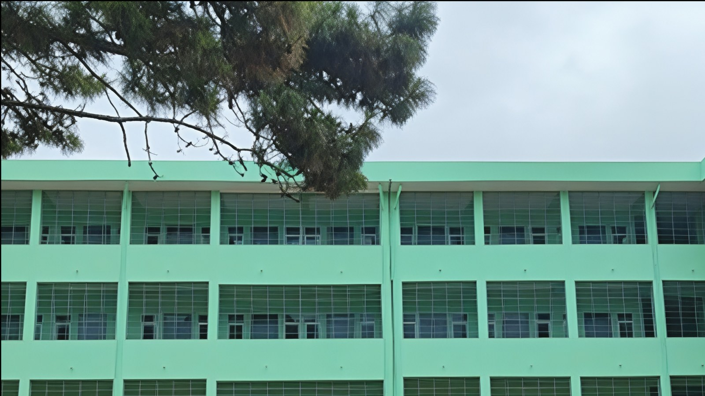

Projects
Completed Build
Institutional Building Completion
Completed building work demonstrating exterior quality, circulation planning, site presentation, and long-term usability for public-facing facilities.

Project Overview
Completed institutional buildings prove a contractor's ability to protect quality all the way to the final stage. This work showcases completed exterior form, organized access, and practical campus presentation.
Scope Highlights
- Final building presentation and exterior quality controls.
- Site access, walkways, drainage awareness, and surrounding works.
- Coordination of finishing trades for public-facing use.
- Completion review before client handover.
Delivery Value
The project supports Win Everest's credibility for clients who need more than construction progress. It shows the company can carry work through to a finished, dependable asset.